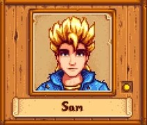

THE BACHELORS❤
Click the heart to favorite!

YOUR FAVORITE? ❤
Favorite Items:
Family:
-Elliott-
Elliott is a writer who lives alone on the Beach and is looking for inspiration for his next novel. He dreams of writing a magnificent novel one day. He is also a romantic who tends to speak in flowery poetry. When he can afford it, he enjoys a strong pito at the Saloon.
Birthday: Fall 5
Clinic Visit: Summer 9
Favorite Items:
- Crab Cakes
- Duck Feather
- Lobster
- Pomegranate
- Squid Ink
- Tom Kha Soup
Family: N/A
Address: Elliott's Cabin

YOUR FAVORITE? ❤

YOUR FAVORITE? ❤
-Harvey-
Harvey is the town doctor. He’s a little old for a bachelor, but he has a kind heart and a respected position in the community. He lives in a small apartment above the medical clinic, but spends most of his time working.
Birthday: Winter 14
Clinic Visit: N/A (Runs the clinic)
Favorite Items:
- Coffee
- Pickles
- Super Meal
- Truffle Oil
- Wine
Family: N/A
Address: Harvey’s Clinic
-Sam-
Sam is an outgoing, friendly guy who is brimming with youthful energy. He works part-time at JojaMart. In his free time, he plays guitar. He also wants to start a band with Sebastian as soon as they have made enough songs. However, he does have a habit of starting ambitious projects and not finishing them. Sam is a little stressed about the impending return of his father, who has been away for years due to serving in the military. He is close with his younger brother, Vincent, and feels responsible for him during his dad's absence.
Birthday: Summer 17
Clinic Visit: Fall 11
Favorite Items:
- Cactus Fruit
- Maple Bar
- Pizza
- Tigerseye
Family:
- Kent (Father)
- Jodi (Mother)
- Vincent (Brother)
Address: 1 Willow Lane

YOUR FAVORITE? ❤

YOUR FAVORITE? ❤
-Sebastian-
Sebastian lives in the basement of the Carpenter's Shop. He tends to feel unappreciated compared to his sister, Maru, who is regarded highly both by his parents and other villagers. He has an interest in science fiction and fantasy and enjoys reading books and graphic novels. He also likes programming computer games and playing tabletop role-playing games. However, feels discontent in the valley and hopes to leave for the city someday.
Birthday: Winter 10
Clinic Visit: Summer 4
Favorite Items:
- Frog Egg
- Frozen Tear
- Obsidian
- Pumpkin Soup
- Sashimi
- Void Egg
Family:
- Robin (Mother)
- Demetrius (Step-Father)
- Maru (Half-Sister)
Address: 24 Mountain Road
-Shane-
Shane seems to suffer from depression, is a heavy drinker, and loves frozen Pizza. He lives with his aunt Marnie and rents a room at her ranch, where he helps out by taking care of the Chickens. He also works as a stock clerk at JojaMart and spends his free time at The Stardrop Saloon in the evenings.
Birthday: Spring 20
Clinic Visit: N/A
Favorite Items:
- Beer
- Hot Pepper
- Pepper Poppers
- Pizza
Family:
- Marnie (Aunt)
- Jas (Goddaughter)
Address: Marnie's Ranch

YOUR FAVORITE? ❤